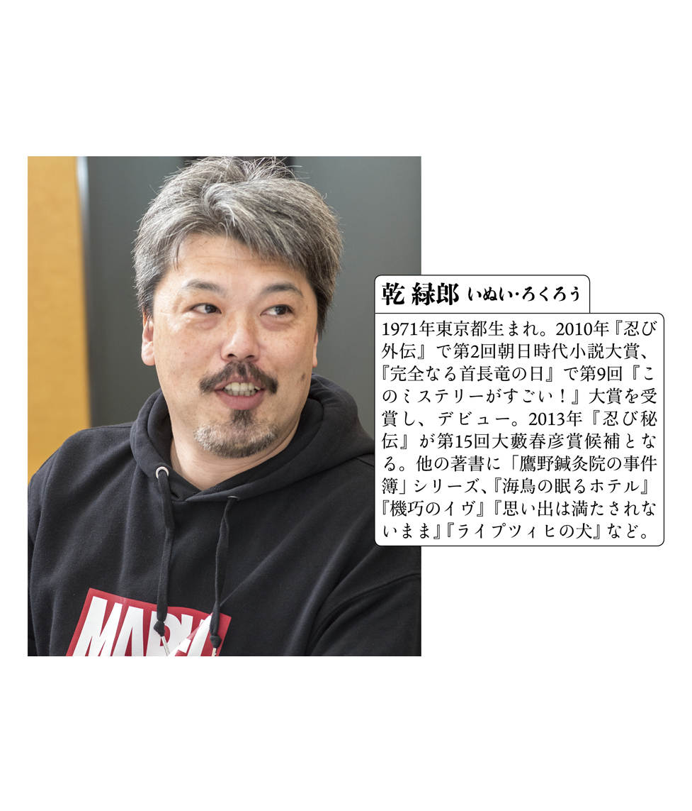

| 『決戦！賤ヶ岳』七本槍ドラフト軍議 | |
| Unknown | |
| 講談社 (2017) | |

決戦！ 草食系。
司会 それでは、「『決戦！ 賤 ヶ岳 』七 本 槍 ドラフト軍議」を始めたいと思います。まずはこの軍議についてご説明します。今回、『決戦！ 賤ヶ岳』でみなさんに書いていただきたい武将は「賤ヶ岳の七本槍」で有名な七人の武将。そして、みなさんが七武将の誰を執筆するか、この話し合いで決めていただこうというのが今回の主旨です。では、『戦 始 末 』で賤ヶ岳の戦いのシーンを書いておられます矢野さんに口火を切っていただきます。矢野さんは賤ヶ岳の戦いにどんなイメージを持っていますか。
矢野 うーん......七本槍という若手の連中もそうですけれど、秀 吉 自身にとっても「成り上がってやる」という熱が一番高い時だったと思うんですよね。勝ったらスゲーことになるぞっていう高揚状態。「成り上がるぞ」っていう熱量を秀吉軍全体に感じる戦だなと。それを象徴しているのが七本槍だと思います。
司会 吉川さんも「鬼 玄 蕃 」こと佐 久 間 盛 政 が主人公の『賤ヶ岳の鬼』で、まさに賤ヶ岳をテーマに書いておられますが、いかがでしょう？
吉川 佐久間盛政は柴 田 勝 家 側で一軍を任されている立場。まだ何者でもない七本槍の武将とは正反対ですよね。ですが、それだけに佐久間にも「これが成り上がる最後の機会だ」という意識はあったのではないでしょうか。つまり、この戦の意義みたいなものをわかっていたと思うんです。実際、秀吉も後年、この賤ヶ岳の戦いを「天下分け目であった」と言っています。現在では「天下分け目」といえば関 ヶ原 ですけれど、関ヶ原の前の「天下分け目」だったわけですね。七本槍の若手たちはそこまでは意識できていなかったのかもしれませんが「ここで働いたらすごい出世ができるぞ」とは感じていたはず。やっぱり、私もサラリーマン時代、会社に入った直後は、ものすごい出世してやるぞという気持ちがありましたけれど、いつの間にかそれがなくなって......（笑）。そういう意味でも若い人たちの熱みたいなものがものすごく出てくる合戦だっただろうな、と。
土橋 やっぱり、ガツガツした若者としての七本槍がいいですよね。他人の足をひっぱったりとか、有名人の首をとってやろう、とか。今の若い人はあまりそういう競争心がないと言われますけど、旗 指 物 から何から目立ってやろう、自分がゴールを決めてやる、みたいな部分を出せたらいいと思いますよね。
木下 賤ヶ岳の戦いは、ＳＭＡＰの解散騒動じゃないけど、もともとは両方とも織 田 軍団で、お互いわかった者同士が分裂した結果の戦いですよね。それに、七本槍というのは、信長が生きていたら大名になれなかった人たち。そこで、博打 として秀吉に賭けたみたいなところがあったかもしれない。本音としては「こんな猿みたいなやつに」って思ってたかも（笑）。そんな形で「七本槍から見た秀吉」が描き出せたら、と思いますね。
司会 簑輪さんは今回、いちばんの若手になるわけですが、七本槍と同じヤング代表として、どうですか。
簑輪 いや、そんなヤングってわけではないんですけど......。えーと、世代差だと思うのですが、僕らの世代というのは生まれたときからずっと不景気で、あんまりこうガツガツしたところで出世できないっていうのは分かってるんですよね。
一同 あーあ（ため息）。
簑輪 （草食系発言に対する皆の落胆に圧迫されつつ......）いや、あの、でも、加 藤 清 正 や福 島 正 則 とか、そういう秀吉側の生 え抜 きの人たちっていうのは純粋にガツガツしていたと思うのですが、逆に後からきた、七本槍の中でも秀吉の子飼いでない者っていうのは、ガンガン前に出るとかえって朋 輩 との調和を乱す、と思って気を遣っていたのではないかと。むしろ、そこにおもしろさや、共感する部分がありますね。あえて名前を出すと糟 屋 （武 則 ）なんですけど。
乾 うん？ それは糟屋をお書きになりたいということ？
簑輪 ええ、そうですね。
一同 おお！
簑輪 糟屋は播 磨 出身で、寝返りで秀吉側に来たという人物。そこにおもしろさを感じるんです。柴田側の武将で、拝 郷 五 左 衛 門 という人がいるんですが、その首を取ったのは一般的には福島正則といわれている。ただ、糟屋が討ち取ったとしている史料もあって、ひょっとすると、ほぼ同時に槍をつけたけど、もう一人が正則なのを見て糟屋は身を引いて、他の所に行っちゃったのかな、と（笑）。
その人、七本槍じゃないよ。
司会 すでに希望武将の表明がございましたので、これからはその辺も含めて語っていきましょうか？ 天野さんはいかがですか。
天野 僕は前 田 利 家 をやる気まんまんだったんですけど......。
一同 笑
矢野 天野さん、利家いないよ！ 七本槍だよ！
天野 いやあ、「次は賤ヶ岳」と聞いて、前田利家を書く気まんまんだったんですよ。だけど、七本槍縛りという予想外の展開で。でも、七本槍のおもしろさって、七本槍内の格差ですよね。福島（正則）、加藤（清正）のメジャーどころと、あと大河でいきなりメジャーになった片 桐 （且 元 ）あたりが有名どころかな。賤ヶ岳後の人生の落差というか、そこにおもしろさを感じる。関ヶ原の戦いでの脇 坂 （安 治 ）とか、あの辺は萌えますね。
吉川 いま、天野さんが脇坂とおっしゃいましたが、私も脇坂で書いたら結構おもしろいものができるのではないかと。
矢野 お、脇坂希望が二人ですか。
乾 ちょっと待った！（高々と挙手する）
矢野 さらに出た、「ちょっと待った！」コール（笑）。でも、脇坂の人気は、わかる気がしますよね。僕も天野さんと同じことを思っていて、七本槍って結局、賤ヶ岳の後がおもしろい。（七本槍が）人生のレッテルなんですよね。出世したやつらは最後まで「あいつらと一緒にすんな」っていうのがあったり、逆に「七本槍なのに」って言われ続けたやつもいるわけで......。脇坂も賤ヶ岳のあとがおもしろい。だから、今までの「決戦！」シリーズは戦場をメインにしていましたが、今回は賤ヶ岳のシーンを盛り込みながら、その前後を書ければと思うんです。乾さんはどうですか？
乾 そうですね。前に川 中 島 を書いたときは、わりと戦場をリアルタイムに書いてくれという要望があった。でも、賤ヶ岳の戦場をリアルタイムで、しかも七本槍の武将で書くのは難しい。やっぱりみなさんおっしゃっていたみたいに、前日譚、後日譚みたいなのを入れながら、あの時の俺はどうだったのか、とか、そういう形で書いていくしかないんじゃないかと。そう考えると、個人的に脇坂にぐっとくるところがありまして......。でも、僕は最終的には（武将決めは）くじ引きとかでもおもしろいかなとも思ってるんです。くじ引きで当たった武将で考える、みたいな。
矢野 新日本プロレスの対戦相手を決めるノリですね！
天野 プロレス知らない人には意味わからないでしょ、その例え（笑）。
昼の槍、夜の槍。
乾 天野さんが前田利家を書きたいと思うのもわかるというか......。賤ヶ岳だとポイントが絞りにくいですし。しかも、七本槍縛りだと......。
矢野 今までみたいに敵・味方に分かれてないですからね。関ヶ原も川中島も戦自体がドラマチックですけど......。
天野 ここは、七本槍縛りをとっぱらうというのはどうでしょうか？
一同 笑
木下 でも、後日譚をやりたいと言っても、今回、各自が書けるのは（原稿用紙）五十枚程度でしょうか。そうなると、後日譚を書くには短いですよね。
矢野 逆に賤ヶ岳メインではなく、後日譚に賤ヶ岳を差し込むぐらいでいいと思いますね。
吉川 私、脇坂で書くんだったらむしろ賤ヶ岳が終わったあとから書こうかなって。終わったあとが物語のはじまりで。
乾 僕は前日譚が書きたいな（笑）。
土橋 脇坂が人気ですが......実は、僕は糟屋推 しだったんですよね。
簑輪 えっ？ あっ、そうなんですか......（笑）。
矢野 じゃあ、僕も表明しちゃっていいですか。僕は福島がやりたい。
木下 矢野さんは九州やから、加藤清正の方が（笑）。僕はてっきり矢野さんは加藤清正を書くんかなって。
矢野 根がアホなんで一番槍とか一番首が好きなんですよ。わかりやすいやつが一番良かったんで。
司会 福島希望が出て少し安心しました。皆さん、玄人 好みというかマイナーな方が人気なので。
木下 調べてみたら七本槍と同じくらい活躍したけれど、刀で活躍したから七本槍に入れてもらえなかった、みたいなかわいそうな人も結構いてて、そういうマイナーな人も出したいなって思っていますけどね。
矢野 死んだり、身分が低かったりとかね。ひとり早死にしてしまった人もいて。
天野 話は変わるけど、矢野さん、福島書いたら、清正と殴り合いになるんでしょ？
矢野 殴り合いになるかなぁ（笑）。
天野 その辺は矢野さんにまかせようかなって。
矢野 そう。だから福島やろうかなって思って。
司会 そういう意味では福島はまさに武 辺 者 で、おもしろいですよね。でも、加 藤 嘉 明 も活躍しているし、その後の武功も立派です。なのに「なんでキャラ立ってないんだろう？」みたいな疑問があります。加藤嘉明を書きたいという方はいらっしゃいませんか？
天野 じゃあ、寝返ろうかな。
矢野 おっ、脇坂から転向ですか？
木下 加藤嘉明は男色っていうかね、衆 道 で。なんかそういう絆 の強さというか......。
矢野 衆道か。七本槍を全員そういう目で見てみるのはどうですか？
木下 違う意味の槍（笑）。なんかそういう要素も入れたいなって。
天野 『決戦！ ＢＬ』。
一同 笑
木下 でも、そういう変化球もおもしろいかな、と。乾さんはどうですか、ゾンビとか出さないんですか？
乾 そういう動きは今回やめといた方が良いかなって（笑）。
矢野 七人を超人みたいに書くっていうのはどうですか。乾さん、今日マー○ルのパーカ着てるし、七人をＸ‐Ｍ○Ｎみたいに（笑）。
木下 読みたいな、それ。
乾 もうなんだか分かんなくなってる。
一同 笑
土橋 簑輪「糟屋合戦」。
簑輪「糟屋合戦」。
司会 希望がいない武将の話をしていきましょうか。七本槍でいちばんマイナーかもしれませんが、平 野 長 泰 希望の方がいませんね。
矢野 『真 田 丸 』の近 藤 芳 正 さん、良かったですよね。
乾 平野はそんなに史料がないんですよね。でも、史料が少ない人って逆に書きやすいかもしれない。吉川さんが（脇坂希望から）変わらないのであれば、僕は平野でもいいです。脇坂を書いて「こんな妙なもん書きやがって！」となったらいやですし（笑）。
吉川 矢野さんもおっしゃってますが、『真田丸』での印象が強い。でも、五千石もらって、「ああもうこれで満足、もう危ないことはしない」という生き方を選んだという書き方はありかもしれませんね。
司会 片桐且元も希望がいません。どうですか、土橋さん。
土橋 関ヶ原や大坂城は書きやすいのかもしれないんですが、どっちかといえば賤ヶ岳の方で書ければと思っているので、そこであんまり目立ってないのかなって気が......。
簑輪 片桐は浅 井 の旧臣ですよね。勝家は負けますけど、負ける時に姫を託しているわけで、ひょっとしたら彼の戦いの目的は（浅井の血を継ぐ）彼女たちを助けることにあったと考えることができなくもないですよね？
矢野 簑輪さん、もう構想ができてるじゃないですか。片桐でも書けそうだ！
簑輪 えっ、いや......（笑）。
司会 でも、矢野さんも片桐且元を書いてますよね（『戦国秘史 歴史小説アンソロジー』）。
矢野 うぐっ。いや、僕がそこで片桐を書いたのは、片桐ならニュートラルにいられるかな、と思ったからなんです。片桐は、後に秀 頼 の傅 役 を任されている。信頼されているということでしょう。僕のイメージでは、すごくバランス感覚のある人。秀吉も、「こいつなら大丈夫だろう」と思ったわけで。そういう意味では能力はあったのではないかと思うんですよね。際立っていたかというと疑問ですが、決して能力の無い人ではなかったのではないかと。
木下 片桐って強かったんですかね？ すげー弱そうなんですけど。
天野 そうなんですよ、弱そうなんですよね。「六本槍じゃ語呂悪いし」みたいな感じで入れられた人間がいるとすれば、片桐なのかな。片桐をやるなら前日譚の方が面白そうですよね。浅井の滅亡とか、秀吉に仕えるにいたった経緯とか。
司会 意外にも、メジャーな加藤清正の希望者もいません。
天野 ......でも、清正は何気に一番書きにくそうじゃないですか。
乾 人気もあるし。
天野 なんかイメージが固まってしまっている。
矢野 だから、それを変化球で書ける人が書いた方がいいのかなと思いますね。
乾 清正はこの本の顔になっちゃうから......避けたい（笑）。
司会 賤ヶ岳の戦いの戦術面についてはいかがでしょう？ お互いに陣地を構築して、初期は長期戦の様相でした。
簑輪 そうですね。最初に木下さんのおっしゃった「もともとは織田軍団同士」というのは、戦術的な面からも感じます。信長は桶 狭 間 の戦いのころから付 城 などの拠点構築を重視する人でしたし、長 篠 の戦いも有名ですよね。賤ヶ岳でもお互い盛んに拠点を築き合っている。そういう意味ではやっぱり織田家の内輪揉めなんだなと。互いにその技術のＤＮＡを受け継いだ者たち同士の戦いなのかなって感じはします。
吉川 佐久間盛政が余 呉 湖を迂回し、大 岩 山 砦を攻撃するわけですが、もし秀吉が岐 阜 から戻るのがもう少し遅くて、盛政らが周辺の砦を落とせていれば、突出していた堀 秀 政 の軍は孤立しますし、戦の趨 勢 は変わってきたでしょうね。結果的には秀吉の圧勝なわけですが、紙一重の戦いであったとも言えるでしょう。
司会 ちなみに第三回「決戦！小説大賞」のお題は「石 田 三 成 」。いわば、賤ヶ岳で七本槍に届かなかった人物。そこで、ここでは石田三成についても語ってほしいのですが......。
矢野 僕は、三成は七本槍の猿回しの親方っぽい気がするんですよね。「お前たちが走る道はつくったぞ、さぁ、走れ走れ」っていう。秀吉の大返しのために沿道で松 明 を焚かせたり、握り飯を用意させたりしていますし。吉川さんは『治 部 の礎 』で三成を書かれていますが、どうですか。
吉川 三成は道を整備したということの他に、そもそも近江 の出身で、寺に学問に出されていたので、その伝 手 を使い、柴田がどう動いたかを常に教えることができた、という話もあるんですよね。
木下 そういう情報戦や兵 站 とかをやって、すごい今っぽいというか......。最近もありましたけど、災害などで流通がだめになったりすると、大変な事態になりますよね？ ちょっとでも滞 ったらいろんな人からバッシングを受ける、いちばん重要でいちばん損な役回りを三成はやっていて、それは現代人が共感しやすい部分じゃないかな、と思います。
司会 ますます「決戦！ 小説大賞」の応募作を読むのが、楽しみになってきますね。......うーん、まだ希望表明がない武将がいます。ここは整理する意味でも、みなさんに希望武将を投票していただきましょうか。
土橋 投票前に一言、いいですか。簑輪さんは「新入りの糟屋は七本槍の間でも気を遣って身を引いたのでは？」とおっしゃってました。簑輪さんは「決戦！」では、いわば新入りですよね？
簑輪 えっ？ はい、そうですが......！
土橋 ならば、自 ずから投票行動も変わってくるはずですよねぇ？
簑輪 うぐっ、あわわわ......。
一同 爆笑
矢野 この座談会を読んだ人、土橋さんのこと極悪人だと思うんじゃないかな（笑）。
いよいよ投票！
司会 では投票結果を発表します。（急に甲 高 い声を張り上げて）矢野隆さま、第一回選択希望武将、福島正則！
矢野 ......あの、司会の方、たぶんパンチョ伊 東 さんを意識してるのだと思いますが、普通でいいですよ。ものまね、全然やり切れてないですし。
司会 ......失礼いたしました。じゃあ、普通に。吉川永青さま、脇坂安治。天野純希さま、加藤嘉明。木下昌輝さま、加藤清正。乾緑郎さま、平野長泰。土橋章宏さま、糟屋武則。そして......簑輪諒さま、糟屋助 右衛 門 武則！
一同 おおー。
司会 そして、片桐且元希望がなしと......。簑輪さん、土橋さんの圧力に屈しなかった理由を教えていただけますか。
簑輪 いや、違うんです。単純に他の人を調べてこなかったんですよ、絶対被らないと思ったので......。もうひとつ気になる逸話があって、糟屋は出身が播磨なので、黒 田 官 兵 衛 と縁があるんです。賤ヶ岳より後、黒田官兵衛が糟屋に「息子の長 政 にいろいろ戦のことを教えてやってくれないか」と、お願いするんですね。で、まぁ糟屋も「不肖の私でよければ」ということで引き受けるんですけれど、その時に糟屋は自分が賤ヶ岳の時に使った槍を長政に渡そうとするんですが、えー、「長政心底は、父の命なれども、糟屋が七本鎗程のことは、我必ず為すべしと思い、鎗を手に取らざる前に......」とある。要は、父親の命令だから話をしに行ったけれど、内心では七本槍程度の武功は自分で立てられると。
司会 まぁ、長政は糟屋を軽んじたわけですね。
簑輪 表向きは「昔から槍士で師範を取って功をなした人を私は知りません」と言って槍を受け取らなかったわけですが......。糟屋も賤ヶ岳の虚名を背負って生きていたのでしょうね。結果、関ヶ原で西軍について、家は潰れてしまうわけですが、この槍は残っているそうです。「槍は残った」というのも、糟屋らしいというか......。
司会 簑輪さん、糟屋でお話がだいぶできてますね。これは事実上、土橋さんに圧力をかけてきたわけですが。
土橋 まぁ、今の情報を僕に差し出した、ということじゃないですか（笑）。あと、もう一点。さっき簑輪さんは片桐のことも、結構詳しかったですよね？
一同 笑
司会 では、あえて他の方にこの争いをどう見るか、聞いてみましょう。天野さんは加藤嘉明で投票いただきましたが、どうですか？
天野 僕の立場からはなんとも言えません。巻き込まないでください（笑）。
簑輪 僕はただ「糟屋愛」を語っただけなんですよぉ！
土橋 そういう清い努力をする人ほど報われない、ということを教えてあげた方がいい（笑）。でも僕は糟屋について全然調べてこなかったので、いま簑輪さんのお話を聞いて、その話を読んでみたいなと思いました、素直に。
司会 おお、土橋さんに譲歩の気配が......。あと、他の方の「これを読みたかった」っていうのはありますか？
天野 矢野さんの片桐！
矢野 うぐっ、だからもう書いたって（笑）。逆に僕は天野さんの加藤清正が読みたいですね！「決戦！」ではワキの人を書かれることが多い天野さんが、ドーンと主役級を書くとどうなるのか？
天野 いや、加藤清正は木下さんですから。私はマイナーな方の加藤嘉明で。
木下 どっちの加藤を書いているか読み終わるまでわからない、とかはどうでしょう？
一同 笑
乾 叙述トリックか。ならば、いっそ土橋さんと簑輪さん、二人とも糟屋を書くというのは？
矢野 片桐なし？ もう七本槍じゃない（笑）！
司会 うーむ、やはりこのままではまとまりそうもありません。ならばもう一度、投票してみましょう。もしかしたら、気持ちが変わっている方もいるかも。
そして、ゆずり愛。
司会 では発表します。矢野隆さま、福島正則。天野純希さま、加藤嘉明。乾緑郎さま、平野長泰。木下昌輝さま、加藤清正。吉川永青さま、脇坂安治。ここまでは前回と同じですね。そして、注目の土橋章宏さま......片桐且元。
土橋 好感度、上げにいきました（笑）。
司会 さらに簑輪諒さまは......片桐且元！ まさかの糟屋を譲り合う展開になりました......。
土橋 僕は、先ほどの話を聞いていて糟屋はぜひ簑輪さんに書いてもらいたいと思うようになりました。ですから、ここは簑輪さんに糟屋を書いていただいて、僕が片桐でお願いします。それに......好感度上げたいですから（笑）。
木下 最後は好感度狙いか（笑）。
司会 ......簑輪さん、これで異議はないですか？
簑輪 は、はい。ありがとうございます。頑張ります。でも、なんか、すごいプレッシャーをかけられたような（笑）。
司会 簑輪さんの糟屋、傑作の予感ですね。では、このへんで軍議を終わりにしたいと思います。みなさま、お疲れ様でした！ さて、せっかくの機会ですので、みなさま、この後、近くの居酒屋で一杯、というのはいかがでしょうか。
土橋 いいですね。僕、簑輪さんに話したいことがあるんですよ、ぜひじっくりと（笑）。
簑輪 えっ、は、はい、ぜひ......。
矢野 土橋さん、やっぱり極悪キャラだわ！
一同 笑
本作品は、二〇一七年八月、小社発行の「小説現代 ９月号」の特集記事を電子書籍化したものです。